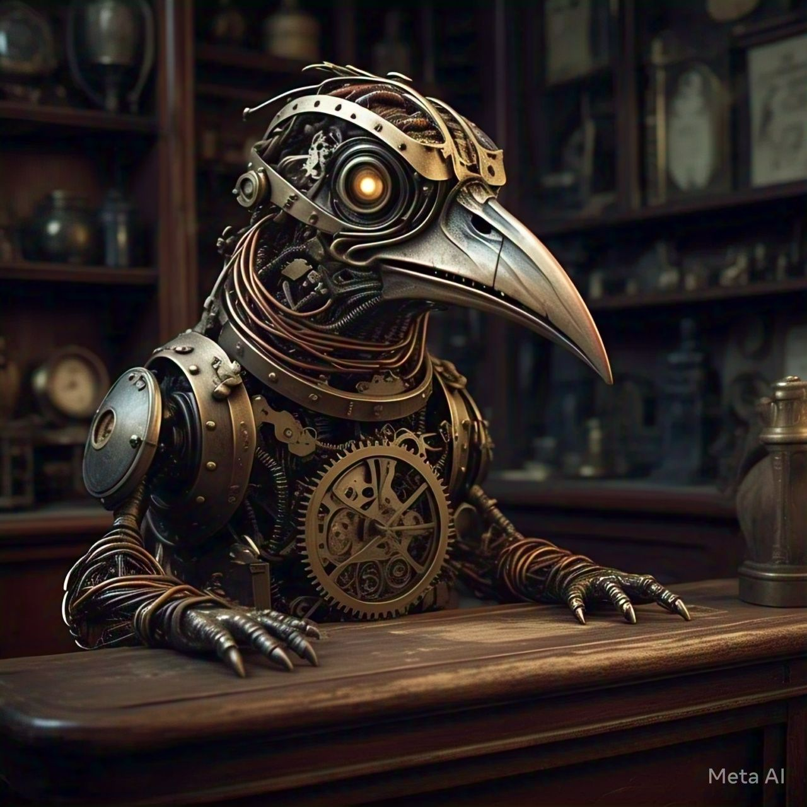

You step onto Clockwork Lane, and the world around you transforms. Clockwork Lane isn't just a road, it's a fever dream of gears and springs. Trees tick instead of rustling. Birds chirp in a perfect mechanical rhythm. The ground beneath you? Smooth metal, because apparently, roads made of normal things are outdated. Even the animals seem to be made of intricately woven metal, their movements a mesmerizing blend of clockwork precision and organic grace.
(Sarcastically) Wow, this seems to be really fun. Walking through a malfunctioning grandfather clock to save the world. Talk about a vacation.
You step forward, your shoes making a strangely satisfying clink with each step. The air is thick with the scent of oil and polished brass. Then, something catches your eye—a peculiar shop wedged between two massive, gear-shaped sunflowers.

The shop is unlike anything you’ve ever seen—entirely constructed from interlocking gears and springs. A thing sits behind the counter, shifting slightly with the soft whirr of hidden mechanisms. Part bird, part clock, and entirely unsettling, it peers at you through glowing, mechanical eyes. It seems to be a shopkeeper, of sorts.
(gruffly) Ah, fresh meat. I mean, a new traveler. Interesting.
Yes, I am. The one who created this world and now I'm on my way to save it. But what about you? Are you the local welcome committee, or…?
(chuckles) Man, you're funny. But before you go any further, you must play a game of the Clocktower Mysteries with me. That's the rule here.
Oh, come on! This is how you welcome visitors? First, a glowing artifact, now a game? Can’t I just get a tutorial level or something? I'm already late for a cosmic emergency!
Sure! Here's your tutorial: First visit? First game. No exceptions.
I hate this place already.
(Chuckles) Well, you have already walked this far, and you won't go back now, will you? It would feel like ages. So hell yes, you are going to play this game.
Well, I have no choice but to play. Then why not play with high spirits? And what a little game could possibly hurt? Besides, I could use a break from all this… clockwork chaos.
Alright, alright. Tell me what this game is all about, Dr. Strange.
(frowns) Dr. Strange? Who's Dr. Strange? I'm the Time Master, guardian of the Clockwork Lane!
Right, right. My apologies, Time Master. So, what's the game?
(ignoring you) The Clocktower Maze awaits! It’s played right here, along this very lane. 15 segments. Each one holds a challenge… or a reward.
He gestures to a strange contraption—a beautifully crafted gear with intricate patterns carved into its surface.
(dramatically) You’ll spin this gear. Wherever it lands, that’s where we move. Think of it as fate. Or extremely complicated dice.
Now then. Are you ready?
After what feels like an eternity (though in reality, only a few minutes have passed), you finally reach the top of the Clocktower. The Time Master, gears whirring contentedly, turns to you with a mischievous grin.
That was some fun game, wasn't it?
Well, I must admit, it wasn't as bad as I initially thought.
And hey, since you did a good job in the game, I will give you this.
The Time Master extends a metallic hand, revealing a small, intricately crafted map of Clockwork Lane. It's a marvel of miniature engineering, with tiny gears depicting the various landmarks and pathways.
Now that's a useful prize! This might come in pretty handy.
Thank you, Time Master. This is very helpful.
You're welcome, young one. You know, these machines have no manners. Never a 'thank you' for a well-played game.
They sure don't. They're probably too busy winding themselves up.
(Chuckles) Indeed. Now, go forth, adventurer! Explore the wonders of Clockwork Lane. But beware, danger lurks around every corner.
With that, the Time Master gestures towards the path ahead, and you continue your journey down Clockwork Lane, the map clutched tightly in your hand.